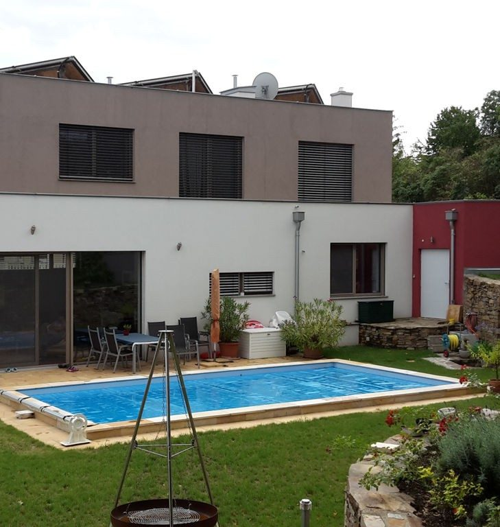

1. Plan
Wir verwandeln Ihre Wünsche in Einreichpläne für die Baubehörde und liefern die statischen Berechnungen aller Bauteile laut Bauordnung.
Start Bau & Zimmerei
In höchster Bauqualität erstellen wir Privathäuser, Wohnbauten, öffentliche Gebäude, Industriebauten, Anbauten, Umbauten und Sanierungen — und machen aus Holz das, was Sie wollen.
In höchster Bauqualität erstellen wir Privathäuser, Wohnbauten, öffentliche Gebäude, Industriebauten, Anbauten, Umbauten, Sanierungen und vieles mehr.

Qualitativ gelten die Bestimmungen der einschlägigen ÖNORMEN B 22xx (Werkvertragsnormen); der Vorgang und Fristenlauf der Mängelrüge richtet sich nach ÖNORM B 2110.
So gelingt es uns, einen optimalen Kundennutzen zu erzielen und für Sie ein gelungenes Bauwerk zu erstellen. Im Zuge unserer Bauausführung übernehmen wir in Zusammenarbeit mit regionalen Betrieben auch folgende Arbeiten:
Wir freuen uns schon auf eine erfolgreiche Zusammenarbeit mit Ihnen!
Traditionelle Zimmermannsarbeiten ebenso wie moderne Konstruktionen. Der Ausbau der Zimmerei wurde 2015/2016 am Firmengelände in Pulkau verwirklicht.
Schematische Darstellung eines Dachstuhls — jede Konstruktion wird individuell berechnet.
Wir verwandeln Ihre Wünsche in Einreichpläne für die Baubehörde und liefern die statischen Berechnungen aller Bauteile laut Bauordnung.
Mengenermittlung nach Plan, markenunabhängige Beschaffung, Logistik und prompte Lieferung auf Ihre Baustelle.
Erd-, Maurer- und Stahlbetonarbeiten, Estriche, Verputz und Fassade durch unsere eigene Baumeister-Partie.
Dachstuhl aus der eigenen Zimmerei, Spengler- und Dachdeckerarbeiten über unsere regionalen Partnerbetriebe.
Elektro, Wasser, Heizung, Gas, Fliesen, Maler und Verglasungen — als Generalunternehmer koordiniert.
Gewährleistung nach ÖNORM: 2 Jahre, bei Endverbrauchern im Sinne des KSchG 3 Jahre.
Ob Einreichplan, Rohbau, Dachstuhl oder Materiallieferung — schildern Sie uns Ihr Projekt. Wir melden uns mit einer konkreten Einschätzung zurück.